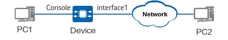

Example for Performing Basic Configurations After the First Login
Networking Requirements
After logging in to the device through the console port for the first time, you must perform basic configurations, including configuring remote login through STelnet, setting the command level of user interfaces 0 to 4 to 3, and setting the authentication mode to AAA. This example assumes that there are reachable routes between PC2 and the device.

In this example, interface1 represents the management interface MEth0/0/0. You can configure a management IP address for a MEth interface only when a device supports the MEth interface. If no management interface is available, you can configure a management IP address for a common interface. For details, see Configuring the Management Address and Route of the Device.

Procedure
- Connect the DB9 connector of the prepared console cable to the PC's serial port (COM), and the RJ45 connector to the device's console port. If there is no DB9 serial port on your terminal (PC), use a DB9-to-USB cable to connect the USB port to the terminal.
- Start a terminal emulation program on PC1. Create a connection and set the port and communication parameters. (This section uses the third-party software PuTTY as an example.)
- Click Serial and set the port to be connected and the communication parameters, as shown in Figure 3.
- Select the port based on actual situations. For example, on Windows, you can open Device Manager to view port information and select the port to be connected.
- Set the communication parameters. Ensure that the communication parameter settings in the terminal emulation software are consistent with the default parameter settings (9600 bit/s transmission rate, 8 data bits, 1 stop bit, no parity check, and no flow control) of the device's console port.
- Click Open.
- PC1 may have multiple ports that can be connected to the device. In this step, you need to select the port to be connected to a console cable. In most cases, COM1 is used.
- If the device's console port communication parameters are modified, you need to modify those on the PC accordingly and re-establish the connection.
- Click Serial and set the port to be connected and the communication parameters, as shown in Figure 3.
- When information similar to the following is displayed, enter a password and confirm the password as prompted. (The actual command output varies depending on the device. The following command output is only an example.)
User interface con0 is available Please Press ENTER. Please configure the login password (8-16) Enter Password: Confirm Password: //Enter the password for logging in to the device through the console port. Info: Save the password now. Please wait for a moment. Info: The max number of VTY users is 21, the number of current VTY users online is 0, and total number of terminal users online is 1. The current login time is 2020-06-30 18:15:10+08:00 <HUAWEI> You must set a login password upon first login to the device through the console port. By default, you can use the console port to perform administrator operations after successfully logging in to the device.
The password is a string of 8 to 16 case-sensitive characters. It must contain at least two of the following character types: uppercase letters, lowercase letters, digits, and special characters. Special characters do not include question marks (?) or spaces.
The password entered in interactive mode will not be displayed on the terminal screen.
- For security purposes, change the password periodically.
- The local administrator (AAA user) must change the password upon the first login. Otherwise, device login fails. You can run the local-user user-name password-force-change disable command to configure a local administrator with a specified user name not to change the password upon the first login. Running this command may bring security risks. Exercise caution when running this command.
- Perform basic configurations on the device.
# Set the date, time, and time zone.
<HUAWEI> clock timezone BJ add 08:00:00 <HUAWEI> clock datetime 20:20:00 2023-05-08

Before configuring the current time and date, run the clock timezone command to configure the time zone. If no time zone is configured, running the clock datetime command will configure the Coordinated Universal Time (UTC).
# Set the device name and IP address of the management interface.
<HUAWEI> system-view [HUAWEI] sysname Device [Device] interface meth 0/0/0 [Device-MEth0/0/0] ip address 10.137.217.203 255.255.255.0 [Device-MEth0/0/0] quit
# Configure a default route for the device with a gateway address of 10.137.217.1.[Device] ip route-static 0.0.0.0 0 10.137.217.1
Run the display this command in the management interface view to check whether the management interface is in _management_vpn_ by default. If so, run the ip route-static vpn-instance _management_vpn_ 0.0.0.0 0 10.137.217.1 command to configure a route for the device.
# Configure the SSH client encryption algorithm, HMAC authentication algorithm, key exchange algorithm list, and public key algorithm.[Device] ssh server cipher aes128_ctr aes256_ctr aes192_ctr aes128_gcm aes256_gcm [Device] ssh server hmac sha2_512_etm sha2_256_etm sha2_512 sha2_256 [Device] ssh server key-exchange dh_group_exchange_sha256 dh_group16_sha512 curve25519_sha256 [Device] ssh server publickey ecc rsa_sha2_256 rsa_sha2_512 [Device] ssh server dh-exchange min-len 3072
# Set parameters for the SSH user and the local user for SSH login.[Device] user-interface vty 0 4 [Device-ui-vty0-4] authentication-mode aaa [Device-ui-vty0-4] user privilege level 3 [Device-ui-vty0-4] protocol inbound ssh [Device-ui-vty0-4] quit [Device] aaa [Device-aaa] local-user admin123 password Please configure the login password (8-128) It is recommended that the password consist of four types of characters, including lowercase letters, uppercase letters, numerals and special characters. Please enter password: Please confirm password: [Device-aaa] local-user admin123 service-type ssh [Device-aaa] local-user admin123 privilege level 3 [Device-aaa] quit [Device] ssh user admin123 [Device] ssh user admin123 authentication-type password [Device] ssh user admin123 service-type stelnet [Device] ssh server-source all-interface [Device] stelnet server enable

Verifying the Configuration
Log in to the device using STelnet from PC2. The third-party software OpenSSH and Windows CLI are used in the following example.
Access the Windows CLI and run the OpenSSH commands to connect to the device. (The actual command output varies depending on the device. The following command output is only an example.)
C:\Users\User1> ssh admin123@10.137.217.203
admin1234@10.248.103.194's password:
Warning: The initial password poses security risks.The password needs to be changed, Continue? [Y/N]:y
Please enter old password:
Please enter new password:
Please confirm new password:
The password has been changed successfully.
Info: The max number of VTY users is 21, the number of current VTY users online is 1, and total number of terminal users online is 2.
The current login time is 2025-07-07 08:01:34.
The last login time is 2025-07-07 07:59:05 from 10.248.103.10 through SSH.
<Device>
Configuration Scripts
Device
#
sysname Device
#
stelnet server enable
#
clock timezone BJ add 08:00:00
#
aaa
local-user admin123 password irreversible-cipher $1d$+,JS+))\\2$KVNj(.3`_5x0FCKGv}H&.kUTI`Ff&H*eBqO.ua>)$
local-user admin123 service-type ssh
local-user admin123 privilege level 3
#
interface MEth0/0/0
ip address 10.137.217.203 255.255.255.0
#
ip route-static 0.0.0.0 0.0.0.0 10.137.217.1
#
ssh user admin123
ssh user admin123 authentication-type password
ssh user admin123 service-type stelnet
ssh server-source all-interface
#
ssh server cipher aes128_ctr aes256_ctr aes192_ctr aes128_gcm aes256_gcm
ssh server hmac sha2_512_etm sha2_256_etm sha2_512 sha2_256
ssh server key-exchange dh_group_exchange_sha256 dh_group16_sha512 curve25519_sha256
ssh server publickey ecc rsa_sha2_256 rsa_sha2_512
ssh server dh-exchange min-len 3072
#
user-interface vty 0 4
authentication-mode aaa
user privilege level 3
protocol inbound ssh
#
return